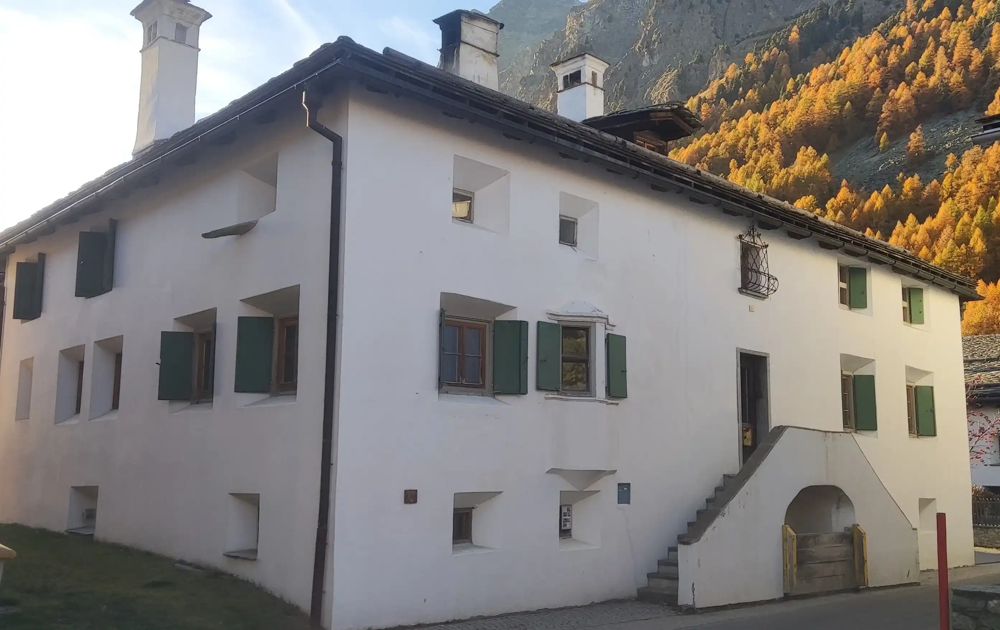
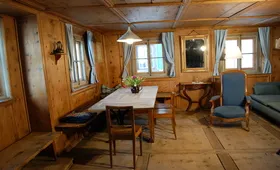
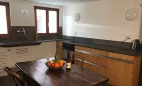
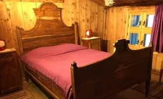
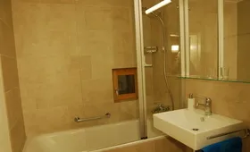
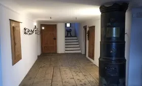
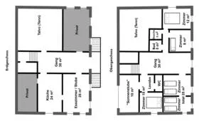

Posta Veglia
Das Haus Posta Veglia (Baujahr 1792) steht unter Denkmalschutz. Wir haben es nur vorsichtig und mit Respekt gegenüber der alten Bausubstanz modernisiert. Die mit Arvenholz getäferte Wohnstube wird von der Küche her mit einem alten Engadinerofen geheizt.
Eine kleine Holztreppe führt zu den darüberliegenden Schlafzimmern. Die historische Küche mit Steinboden und einem Schüttstein aus Granit wurde mit modernen Geräten ausgerüstet, aber baulich nicht verändert.
Die modernen Badezimmer bieten auch bei voller Belegung den erwünschten Komfort. Sieben bis maximal neun Personen können in diesem historischen Ambiente gemütliche, erholsame Ferien verbringen.

Räume

Wohnzimmer & Sonnenstube
Bilder ansehen
Küche
Bilder ansehen
Schlafzimmer
Bilder ansehen
Badezimmer
Bilder ansehen
Gang & Garten
Bilder ansehen
Restliche Ausstattung
Bilder ansehen360° Fotos
Karte wird geladen...
Belegungsplan
Kalender wird geladen...
Preise
Die Posta Veglia kann grundsätzlich von Samstag bis Samstag gemietet werden. In der Saison 4 sind auch kürzere Aufenthalte und andere Anreisetage möglich. Je nach Kalenderjahr können die Saisons leicht varieren. Für die Woche mit Ostermontag gilt der Tarif Saison 1 Winter.
| Saison 1 Winter | Saison 1 Sommer | Saison 2 Winter | Saison 2 Sommer | Saison 3 | Saison 4 |
|---|---|---|---|---|---|
| KW 1/ 5-Ostern/ 51-53 | KW 27-37 | KW 2-4 | KW 38-42 | KW 23-26 | KW Ostern-22/ 43-50 |
| Weihnachten/ Neujahr/ Februar/ März bis Ostern |
Juli/ August bis Mitte September |
Januar | Mitte September bis ca. 20. Oktober |
Juni | Ostern bis Ende Juni/ ca. 20. Oktober bis Weihnachten |
| CHF 2'030.- | CHF 1'950.- | CHF 1'830.- | CHF 1'790.- | CHF 1'640.- | CHF 1'440.- |
Im Mietpreis inbegriffen sind die Kosten für Holz zum Heizen, Bettwäsche, Kurtaxen, Internet und zwei Parkplätze. Nicht inkl. sind die Stromkosten für das Elektrisch und die Schlussreinigung à CHF 250.-. Die Stromkosten werden nach Verbrauch abgerechnet und varieren je nach Saison zwischen CHF 50.- und 250.-. Zusätzlich ist bei der Vertragsunterzeichnung eine Kaution von CHF 300.- zu leisten (CHF 400.- für 14 Tage).
Standort
Standort Karte wird geladen...
Unsere Gäste bewerten die Posta Veglia auf Google Maps mit 4.5 von 5 Sternen (basierend auf 2 Bewertungen).
Kontakt
Haben Sie eine Frage?
Möchten Sie gerne die Posta Veglia mieten? Haben Sie eine Frage zum Haus oder zur Umgebung? Dann füllen Sie bitte das Kontaktformular aus.
Seraina Steinlin
info@altepostsils.ch
079 891 00 30